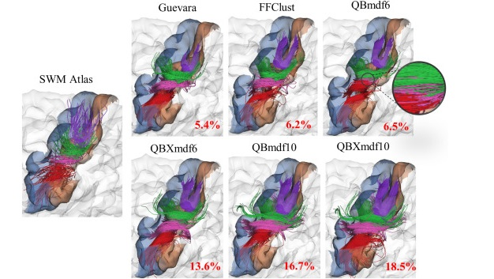
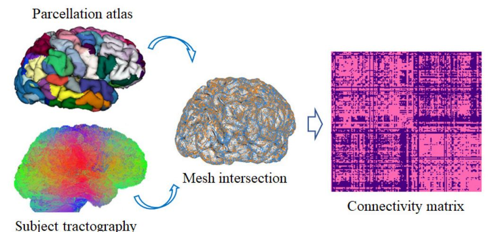
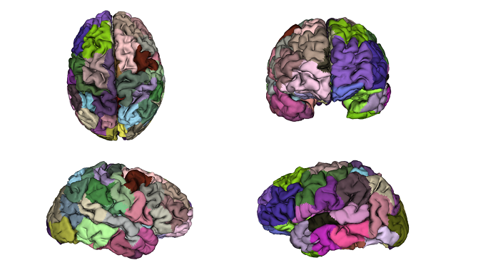
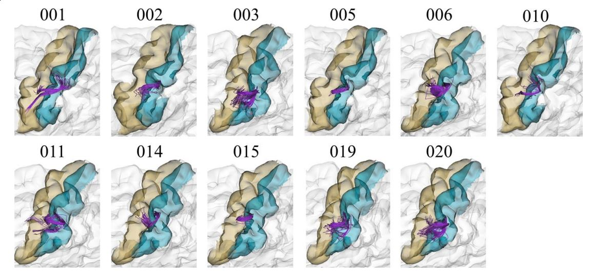

FFClust is a method for clustering brain white matter fibres. It is the fastest algorithm in the state of the art, while providing a good quality of clusters.
The method consists of three stages: 1st. Parallel Kmeans on the fibre points. 2. Mapping of point clusters to fibre clusters. 3rd Segmentation, a supervised method to reduce dimensionality. 4º. Union of groups to reduce the number of clusters using clique...

We present a hybrid method to create fine-grained parcellations of the cortical surface,
from a coarse-grained parcellation according to an anatomical atlas, based on cortico-cortical connectivity. The connectivity
information is obtained from segmented superficial and deep white matter bundles, according to bundle atlases, instead of the whole tractography.
Thus, a direct matching between the fiber bundles and the cortical regions is obtained, avoiding the problem of finding the correspondence of the
cortical parcels among subjects...

We present GeoSP, a parallel method that creates a parcellation of the cortical mesh based on a
geodesic distance, in order to consider gyri and sulci topology. The method represents the mesh with a graph and performs a K-means
clustering in parallel. It has two modes of use, by default, it performs the geodesic cortical parcellation based on the boundaries of
the anatomical parcels provided by the Desikan-Killiany atlas. The other mode performs the complete parcellation of the cortex...

Difusion MRI is the preferred non-invasive in vivo modality for the study
of brain white matter connections. Tractography datasets contain 3D streamlines that
can be analyzed to study the main brain white matter tracts. Fiber clustering methods
have been used to automatically group similar fbers into clusters. However, due to
inter-subject variability and artifacts, the resulting clusters are difcult to process for
fnding common connections across subjects, specially for superfcial white matter...